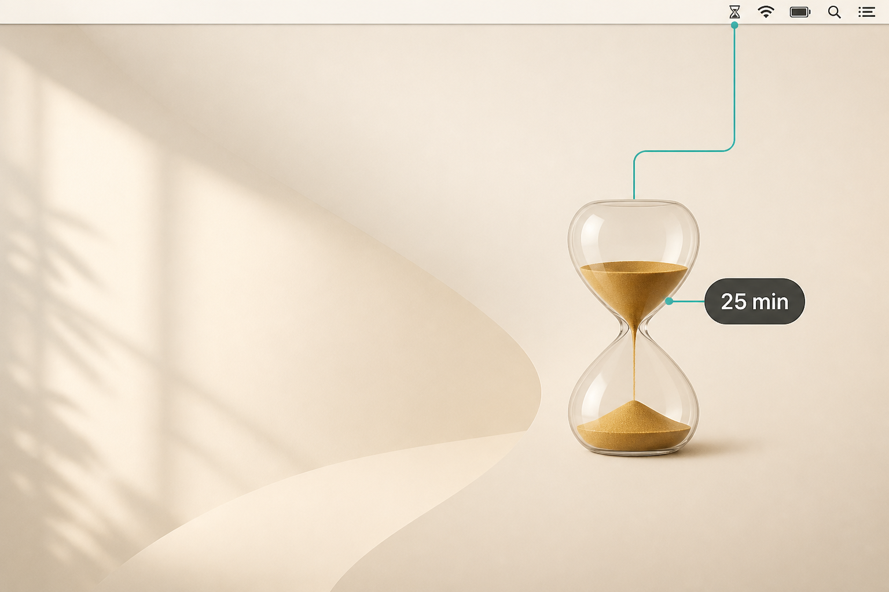
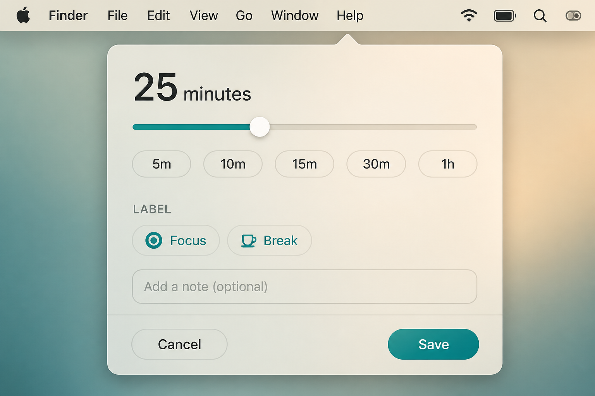
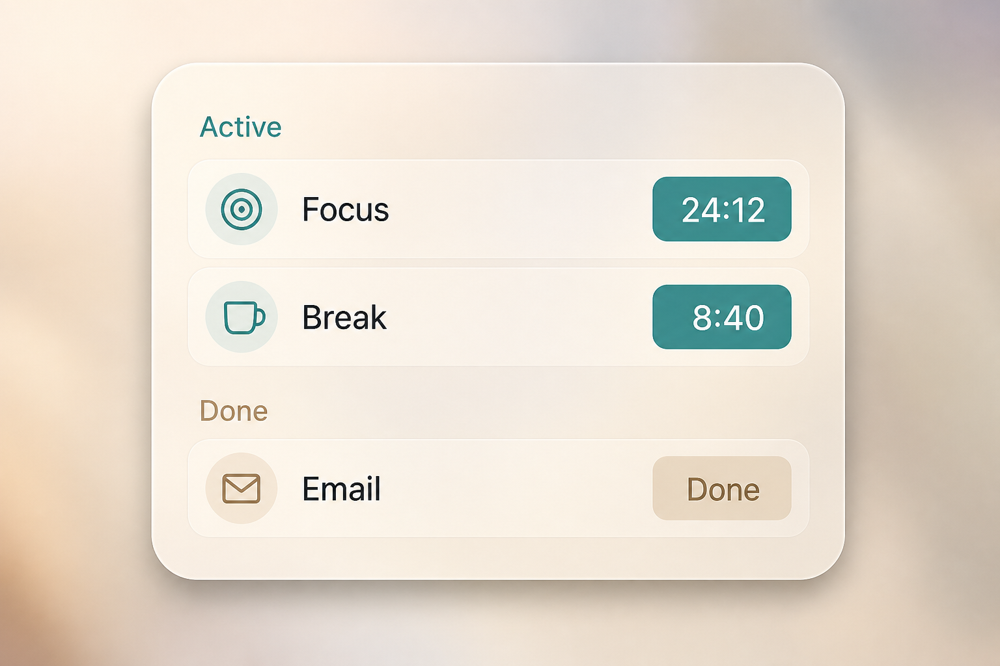

Tutorial v1.0
How PullTimer works
The whole app is an hourglass in the menu bar. This page is the written tour: the same four moves as How it works in the app, plus the list, expiry, and settings.
1 First launch
Download PullTimer.dmg, open it, and drag PullTimer into Applications. Then look at the right side of the menu bar. That hourglass is the app. Nothing appears in the Dock or Cmd-Tab.
If macOS says the app cannot be opened, right-click PullTimer and choose Open.
- Click the hourglass → timer list
- Drag down from the hourglass → set a duration
- Right-click → Settings, How it works, Quit
Allow notifications if macOS asks, so a timer can reach you when it ends.

2 Pull to set a time
Press the hourglass and drag down. Further down is a longer timer. Precision is one minute, not 5-minute buckets.
A short dead zone at the top ignores tiny movements, so a click does not create a timer. Past that, the teal line is live.
| What you see | What it means |
|---|---|
| Teal line | Distance becomes duration |
| Hourglass on the line | Sand shifts; the glass can rotate |
| Dark bubble | Minutes + the clock time it will end |
| Sand-colored bubble | End time is on :00 :15 :30 :45 |
When the end time hits a quarter-hour, the Mac trackpad clicks and only the duration bubble changes color. The line and hourglass stay teal.
Cancel: drag onto the trash near the Dock. Nothing is saved. A haptic can confirm you entered the zone.
Release (not on the trash) opens the Save window, not the timer list.
3 Name it, then Save
Letting go opens this window. Clicking the icon never does.

- Check the duration: slider or
5m10m15m30m1h - Pick a Label chip, or type your own
- Save creates a real timer. Cancel throws the pull away
Chips remember titles you have used. A history chip can also restore the last duration for that name.
4 The timer list
Click the hourglass without dragging.

- Active: teal pill is time left. Click a row to edit. × removes it.
- Done: expired timers stay until you press Done or Clear done.
At the bottom you can add a timer without pulling: type a name, set the slider, tap a chip, then Add.
ⓘ starts the guided tour. Quit leaves the app.
5 While a timer runs
The menu bar can show the nearest countdown next to the hourglass. Sand in the glass falls as time passes.
Several timers can run at once. They are saved on disk, so they survive quit and relaunch.
6 When time is up
The timer is kept (it moves to Done) and an in-app popup appears:
- +5 min / +10 min snooze
- View opens the list
- × dismisses the popup
A sound can play if Notification Sound is on. While PullTimer is running, the system banner stays out of the way so this popup is the one you see.
7 Settings
Right-click the hourglass → Settings… (shortcut ,).
General
| Setting | Default | What it does |
|---|---|---|
| Notification Sound | On | Play a sound when a timer ends |
| Sync with Reminders | Off | Add each new timer to Apple Reminders |
| Launch at Login | Off | Start PullTimer when you log in |
Advanced
| Setting | Default | What it does |
|---|---|---|
| Default timer | 15m | Duration used by Add in the list |
| Drag start | 112 px | Dead zone before a pull begins |
| Duration curve | Balanced | Precise / Balanced / Fast: how quickly minutes grow |
| Max duration | 24h | Top of a full-screen drag (8h / 12h / 24h) |
| Menu bar countdown | On | Remaining time next to the icon |
| Hourglass rotation | On | Spin the glass while dragging |
| Haptic on cancel | On | Click when you enter the trash zone |
Reset to defaults restores Advanced only.
8 In-app tour
Right-click → How it works…, or tap ⓘ in the list or Settings. The tour plays on your screen:
- Watch the hourglass
- Drag down to choose a time
- Release: the Save window opens
- Type a name and Save: a real timer is created
Skip or press Esc to leave. Skipping does not create a timer.
9 Short reference
| Gesture | Result |
|---|---|
| Click the hourglass | Open / close the list |
| Drag down, release | Save window → new timer |
| Drag onto the trash | Cancel |
| Click an Active row | Edit name and duration |
| Right-click | Settings, tour, Quit |
| Esc while pulling | Cancel the pull |
macOS 13+, Apple silicon and Intel, Free